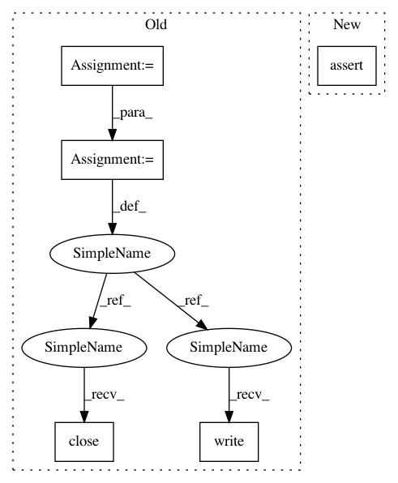

e3d577b5595af3e1c9a05d3be84dbdf1a7c4aa20,nilearn/datasets/tests/test_atlas.py,,test_fetch_atlas_destrieux_2009,#Any#Any#,316
Before Change
def test_fetch_atlas_destrieux_2009(tmp_path, request_mocker):
datadir = str(tmp_path / "destrieux_2009")
os.mkdir(datadir)
dummy = open(os.path.join(
datadir, "destrieux2009_rois_labels_lateralized.csv"), "w")
dummy.write("name,index")
dummy.close()
bunch = atlas.fetch_atlas_destrieux_2009(data_dir=str(tmp_path),
verbose=0)
assert len(tst.mock_url_request.urls) == 1
After Change
bunch = atlas.fetch_atlas_destrieux_2009(data_dir=str(tmp_path),
verbose=0)
assert request_mocker.url_count == 1
assert bunch["maps"] == str(tmp_path / "destrieux_2009"
/ "destrieux2009_rois_lateralized.nii.gz")
bunch = atlas.fetch_atlas_destrieux_2009(
In pattern: SUPERPATTERN
Frequency: 3
Non-data size: 5
Instances
Project Name: nilearn/nilearn
Commit Name: e3d577b5595af3e1c9a05d3be84dbdf1a7c4aa20
Time: 2020-07-29
Author: jerome@dockes.org
File Name: nilearn/datasets/tests/test_atlas.py
Class Name:
Method Name: test_fetch_atlas_destrieux_2009
Project Name: MolSSI/QCEngine
Commit Name: c5c04005ee246d61296bfc3d3eec77b664823846
Time: 2019-08-28
Author: mattgwelborn@gmail.com
File Name: qcengine/tests/test_cli.py
Class Name:
Method Name: test_run_psi4
Project Name: nilearn/nilearn
Commit Name: e3d577b5595af3e1c9a05d3be84dbdf1a7c4aa20
Time: 2020-07-29
Author: jerome@dockes.org
File Name: nilearn/datasets/tests/test_atlas.py
Class Name:
Method Name: test_fetch_atlas_destrieux_2009
Project Name: MolSSI/QCEngine
Commit Name: c5c04005ee246d61296bfc3d3eec77b664823846
Time: 2019-08-28
Author: mattgwelborn@gmail.com
File Name: qcengine/tests/test_cli.py
Class Name:
Method Name: test_run_procedure